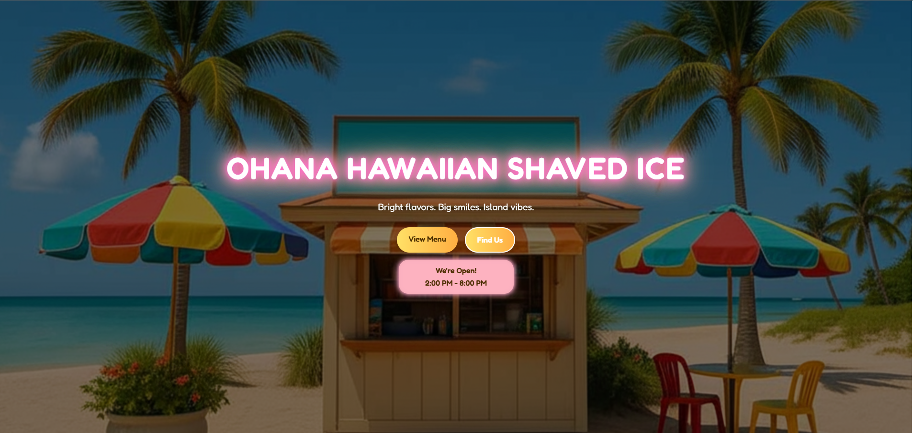
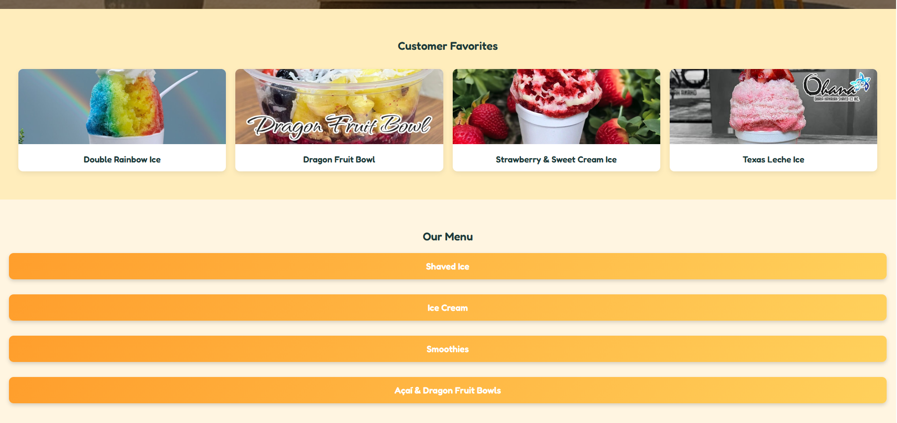
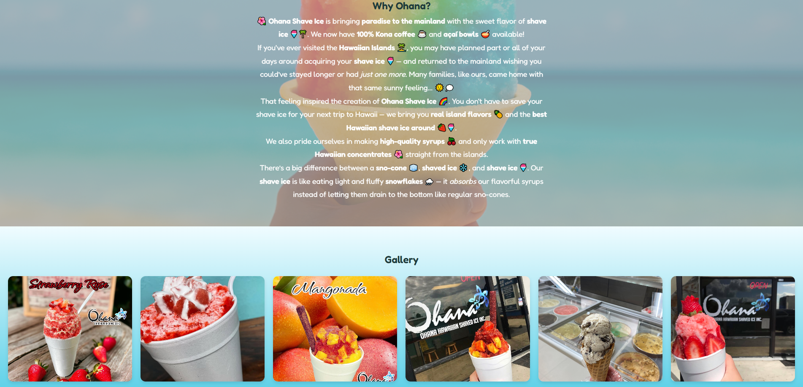

Ohana Hawaiian Shaved Ice Website
Summary
This repository, Ohana-Hawaiian-Shaved-Ice, showcases a vibrant and user-friendly web application designed for a Hawaiian-themed shaved ice business. It demonstrates proficiency in front-end web development, utilizing HTML, CSS, and JavaScript to create an engaging and aesthetically pleasing user experience. The project effectively highlights skills in responsive design, and the ability to build a visually appealing site for a specific niche, making it a strong addition to a web developer's portfolio.
Screenshots & Demos




Code Snippets
// This is the scripts used in the website
// If you want to see the HTML and CSS just go to my github:
// https://github.com/ggstephen6724
document.addEventListener("DOMContentLoaded", function () {
const buttons = document.querySelectorAll(".collapsible");
buttons.forEach((btn) => {
btn.addEventListener("click", function () {
const content = this.nextElementSibling;
// Collapse other sections if needed
document.querySelectorAll(".content").forEach((el) => {
if (el !== content) {
el.style.maxHeight = null;
el.classList.remove("expanded");
}
});
// Toggle selected section
if (content.classList.contains("expanded")) {
content.style.maxHeight = null;
content.classList.remove("expanded");
} else {
content.classList.add("expanded");
// Add 32px to scrollHeight to cover vertical padding (1rem top + 1rem bottom)
content.style.maxHeight = (content.scrollHeight + 32) + "px";
}
});
});
});
(function() {
const statusEl = document.getElementById('open-status');
if (!statusEl) return;
// Open hours for each day (0 = Sunday, 6 = Saturday)
const hours = {
0: [12, 20], // Sunday 12pm-8pm
1: [14, 20], // Monday 2pm-8pm
2: [14, 20], // Tuesday 2pm-8pm
3: [14, 20], // Wednesday 2pm-8pm
4: [14, 20], // Thursday 2pm-8pm
5: [14, 20], // Friday 2pm-8pm
6: [12, 20], // Saturday 12pm-8pm
};
const now = new Date();
const day = now.getDay();
const hour = now.getHours();
const minute = now.getMinutes();
function formatTime(h, m = 0) {
const ampm = h >= 12 ? 'PM' : 'AM';
const hour12 = h % 12 === 0 ? 12 : h % 12;
const minuteStr = m < 10 ? '0' + m : m;
return `${hour12}:${minuteStr} ${ampm}`;
}
const [openHour, closeHour] = hours[day];
const todayHours = `${formatTime(openHour)} - ${formatTime(closeHour)}`;
const isOpen = (hour > openHour && hour < closeHour) || (hour === openHour && minute >= 0) || (hour === closeHour && minute === 0);
function getNextOpen() {
for (let i = 1; i <= 7; i++) {
const nextDay = (day + i) % 7;
const nextHours = hours[nextDay];
if (nextHours) {
const [nextOpenHour] = nextHours;
const date = new Date(now);
date.setDate(now.getDate() + i);
const options = { weekday: 'long' };
const dayName = date.toLocaleDateString(undefined, options);
return `Opens ${dayName} at ${formatTime(nextOpenHour)}`;
}
}
return '';
}
if (isOpen) {
statusEl.innerHTML = `We're Open!
${todayHours}`;
statusEl.style.backgroundColor = 'rgba(255, 182, 193, 0.9)';
statusEl.style.color = '#4b2e00';
} else {
statusEl.innerHTML = `We're Closed!
${getNextOpen()}`;
statusEl.style.backgroundColor = 'rgba(200, 200, 200, 0.8)';
statusEl.style.color = '#555';
}
})();